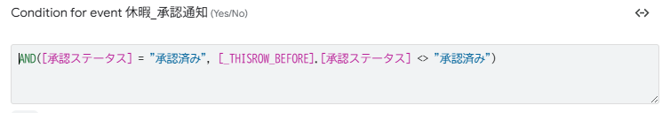
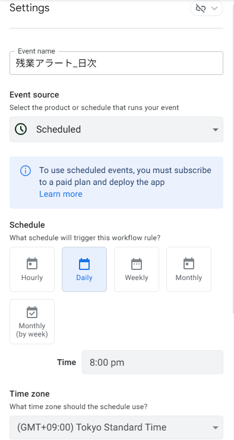
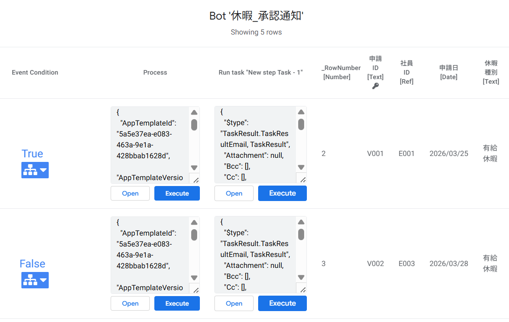

Automation を活用しよう
8-1 この章で作る3つの Bot（中級編のポイント）
Bot の基本（Automations メニューの開き方・Bot → Event → Process → Step の4階層構造・Data change type の意味・Send an email の基本設定・<<[カラム名]>> テンプレート記法など）は 初級編 第5章 で解説済みです。本章ではこれらの復習は最小限にとどめ、中級編ならではの Automation 活用 に集中します。
- Event の Condition に式を入れて「状態遷移」を検知する（
[_THISROW_BEFORE]） - Scheduled Bot（定刻起動）で毎日決まった時刻に処理を走らせる
- Bot のコピー機能 で、類似 Bot を効率よく量産する
- Audit history と Test（テスト実行） で Bot の動作を検証する
■ この章で作る Bot の全体像
| No. | Bot 名 | Event 種別 | 役割 |
|---|---|---|---|
| 1 | 休暇_承認通知 | Data Change（Updates） | 承認されたら申請者にメール通知 |
| 2 | 休暇_差戻し通知 | Data Change（Updates） | 差戻されたら申請者にメール通知 |
| 3 | 残業アラート_日次 | Schedule（毎日20:00） | 勤務10時間超の社員を総務部に通知 |
■ 復習：Bot の構造（初級編のおさらい）
初級編で学んだとおり、Bot は Event（いつ起動するか）→ Process（処理の枠）→ Step / Task（実際の処理） の3階層で構成されます。初級編では Event の Data change type に 「Adds（行の追加）」 を使いましたが、中級編では 「Updates（行の更新）」 と 「Schedule（定刻起動）」 を新たに使います。
Data Change / Schedule
定義する枠
（メール送信 など）
8-2 承認通知メール ─ 状態遷移を検知する
第7章で作成した「承認する」Action で承認ステータスが「承認済み」に変わったら、申請者に承認通知メールを自動送信 する Bot を作ります。初級編との最大の違いは、Event の Condition に「状態遷移」を検知する式を入れる 点です。
■ なぜ Condition が必要なのか？
初級編では Event の Condition を空欄にしました（行が追加されたら無条件に発火）。しかし今回は Updates（更新） をトリガーにするため、Condition なしだと 承認ステータス以外のカラム（例：メモ）を編集しただけでもメールが送信 されてしまいます。さらに、既に承認済みの行を別の理由で再保存するたびにメールが飛ぶことにもなります。
これを防ぐのが [_THISROW_BEFORE] です。
■ 中級編のキモ：[_THISROW_BEFORE] で状態遷移を検知
AND(
[承認ステータス] = "承認済み",
[_THISROW_BEFORE].[承認ステータス] <> "承認済み"
)[_THISROW_BEFORE].[カラム名] は 更新直前の値 を参照する特別な記法です。この式は「更新後は承認済み」かつ「更新前は承認済みでなかった」＝ 承認済みに"変わった"瞬間 にだけ TRUE になります。
= 「申請中」
= 「承認済み」
承認通知
■ Bot の設定内容
| 要素 | 設定値 |
|---|---|
| Bot name | 休暇_承認通知 |
| Event - Table | 休暇申請 |
| Event - Data change type | Updates only |
| Event - Condition | AND([承認ステータス] = "承認済み", [_THISROW_BEFORE].[承認ステータス] <> "承認済み") |
| Step - Type | Send an email |
| Step - To | [社員ID].[メールアドレス]※ テスト時は自分のアドレスを直接入力してもOK |
| Step - Subject | 【承認】休暇申請が承認されました（<<[申請ID]>>） |
| Step - Body | 後述のメールテンプレート参照 |
■ 作成手順（要点のみ）
Automations → 「+ New Bot」→ 「Create a new bot」 で Bot を作成し、名前を 「休暇_承認通知」 にします。
Configure event をクリックし、Table = 休暇申請、Data change type = Updates only に設定します。
Condition 欄に次の式を入力します（ここが中級編のポイント）。
AND(
[承認ステータス] = "承認済み",
[_THISROW_BEFORE].[承認ステータス] <> "承認済み"
)「+ Add a step」→「Create a new step」 で Step を追加し、Send an email を選択。To / Subject / Body を上記設定に従って入力し、Save。
■ メールテンプレート
Subject（件名）：
【承認】休暇申請が承認されました（<<[申請ID]>>）Body（本文）：
<<[社員ID].[氏名]>> さん
いつもお疲れ様です。
下記の休暇申請が承認されましたのでお知らせします。
─────────────────────
申請ID ：<<[申請ID]>>
休暇種別 ：<<[休暇種別]>>
開始日 ：<<[開始日]>>
終了日 ：<<[終了日]>>
理由 ：<<[理由]>>
─────────────────────
当日はゆっくりお休みください。
勤怠管理アプリ（自動送信）■ 送信されるメールのイメージ

[_THISROW_BEFORE] を使った状態遷移判定を入力[社員ID].[メールアドレス] は、休暇申請の「社員ID」カラム（Ref）を経由して社員マスタの「メールアドレス」を取得する書き方です。テンプレート記法の <<[社員ID].[氏名]>> も同じ仕組みです。第2章で設定した Ref のおかげで、関連テーブルの値を自在に引けるようになっています。
[社員ID].[メールアドレス] は、社員マスタに登録されたアドレス宛にメールが送信されます。テスト段階では 社員マスタのメールアドレスを自分のアドレスに書き換えておく か、To 欄に自分のアドレスを直接入力してテストしてください。他人のアドレスにテストメールが飛ばないよう注意しましょう。本番運用に移す際に、正式なアドレスに戻してください。
8-3 差戻し通知メール ─ Bot のコピーで効率化
8-2 と構造がほぼ同じ Bot を作ります。一から作り直す代わりに、Bot のコピー機能 を使って効率よく量産します。
■ 作成手順（コピーして差分だけ修正）
Bots 一覧で 「休暇_承認通知」の右にある「…」メニュー → 「Duplicate」 を選択します。
コピーされた Bot 名を 「休暇_差戻し通知」 に変更します。
Event の Condition を次の式に書き換えます。
AND(
[承認ステータス] = "差戻し",
[_THISROW_BEFORE].[承認ステータス] <> "差戻し"
)Step の Subject と Body を下記に差し替えて Save。
■ 差戻しメールテンプレート
Subject：
【差戻し】休暇申請が差戻されました（<<[申請ID]>>）Body：
<<[社員ID].[氏名]>> さん
下記の休暇申請が差戻されましたのでご確認ください。
内容を修正のうえ、再度申請してください。
─────────────────────
申請ID ：<<[申請ID]>>
休暇種別 ：<<[休暇種別]>>
開始日 ：<<[開始日]>>
終了日 ：<<[終了日]>>
理由 ：<<[理由]>>
─────────────────────
ご不明な点は総務部までご連絡ください。
勤怠管理アプリ（自動送信）8-4 残業アラート ─ Scheduled Bot で定刻起動
ここまでの Bot は「データが変更されたとき」に発火する Data Change Bot でした。3つ目の Bot は Scheduled Bot（定刻起動） です。毎日夜20時に、当日の勤怠記録で勤務時間が10時間以上の社員がいた場合、総務部に通知します。
■ Data Change Bot との違い
| 比較項目 | Data Change Bot（8-2, 8-3） | Scheduled Bot（8-4） |
|---|---|---|
| 起動のきっかけ | 行の追加・更新・削除 | 指定した日時・間隔 |
| 対象データ | 変更された行 | テーブル全体（For each row in table で走査） |
| 本章での用途 | 承認/差戻し → 申請者に通知 | 毎日20時 → 残業者がいれば総務部に通知 |
■ Bot の設定内容
| 要素 | 設定値 |
|---|---|
| Bot name | 残業アラート_日次 |
| Event - Event type | Schedule |
| Event - Frequency | Daily / 20:00 / Asia/Tokyo |
| Event - For each row in table | ON（勤怠記録） |
| Event - Condition | AND([日付] = TODAY(), [勤務時間] >= 10) |
| Step - To | 下記の式（総務部全員に送信） ※ テスト時は自分のアドレスを直接入力 |
| Step - Subject | 【残業アラート】<<[社員ID].[氏名]>> さんが本日10時間以上勤務 |
| Step - Body | 後述のメールテンプレート参照 |
■ 作成手順（要点のみ）
「+ New Bot」 で Bot を作成し、名前を 「残業アラート_日次」 にします。
Configure event で Event type を「Schedule」 に切り替え、Frequency = Daily、Time = 20:00、Time zone = Asia/Tokyo を指定します。
For each row in table を ON にし、テーブルで 勤怠記録 を選択します。これにより、毎日20時に勤怠記録の全行に対して Condition が評価されます。
Condition に次の式を入力します。
AND(
[日付] = TODAY(),
[勤務時間] >= 10
)Step で Send an email を選択し、To に次の式を入力します。
CONCATENATE(
SELECT(社員マスタ[メールアドレス], [部署] = "総務部"),
","
)これで総務部の全メンバーに一斉送信されます。
⚠️ テスト時は、この式の代わりに 自分のメールアドレスを直接入力 してください（例：yourname@example.com）。無料プランでは送信数に上限があり、複数人に不要なテストメールが飛ぶのを防げます。動作確認が取れたら本番用の式に差し替えてください。
Subject と Body を入力して Save。
■ メールテンプレート（Body）
総務部のみなさま
下記の社員が本日10時間以上勤務しています。
労務管理の観点からご確認ください。
─────────────────────
社員 ：<<[社員ID].[氏名]>>（<<[社員ID].[部署]>>）
日付 ：<<[日付]>>
出勤時刻 ：<<[出勤時刻]>>
退勤時刻 ：<<[退勤時刻]>>
勤務時間 ：<<[勤務時間]>> 時間
─────────────────────
勤怠管理アプリ（自動送信）
SELECT(社員マスタ[メールアドレス], [部署] = "総務部") は「社員マスタから総務部のメールアドレスをリストで取得する」式です。CONCATENATE() でカンマ区切りの文字列にすることで、メールの To 欄に複数宛先として渡せます。
8-5 Bot の動作確認とモニタリング
作成した Bot が正しく動いているか確認する方法を学びます。
■ Audit History で実行ログを確認
左メニューの Monitor アイコン（📊）→ Audit history を開きます。
実行された Bot の履歴が時系列で表示されます。フィルタで Event type = Bot に絞ると見やすくなります。
各行をクリックすると、Event の詳細・実行時刻・Step の成功/失敗・送信先アドレスなどを確認できます。
■ Test（テスト実行）で即座に確認
Data Change Bot はプレビューでデータを変更すればトリガーできますが、Scheduled Bot は定刻まで待つ必要があります。「Test」（Bot の「…」メニュー内）を使えば即座にテスト実行できます。
Bots 一覧で対象の Bot を開き、Event パネル右上の 「…」メニュー →「Test」 をクリックします。
テスト結果画面に遷移し、対象テーブルの全行に対して Event Condition の評価結果 が一覧表示されます。
各行の左側に 「True」 または 「False」 と表示されます。True は Condition を満たした行（Bot が発火する行）、False は満たさなかった行です。
「True」の行 にある 「Execute」ボタン をクリックします。その行を対象に Bot の Step（メール送信など）が実際に実行されます。
メールの受信ボックスを確認し、テンプレート通りの内容が届いていれば成功です。

- 承認通知 Bot のテスト：先にプレビューで「承認する」ボタンを押す → Test
- 差戻し通知 Bot のテスト：先にプレビューで「差戻す」ボタンを押す → Test
- 残業アラート Bot のテスト：勤務時間が10時間以上になるテストデータを用意 → Test
■ Bot のよくあるトラブル（早見表）
| 症状 | 確認ポイント |
|---|---|
| Bot が発火しない | Bot が Enabled（有効） か ／ Condition が TRUE を返す行があるか ／ Data change type が合っているか |
| メールが届かない | To 欄の式が空文字を返していないか ／ 迷惑メールフォルダ ／ 無料プランの上限 |
| 同じメールが何度も届く | Condition に [_THISROW_BEFORE] の状態遷移判定が入っているか |
| Audit history に何も出ない | Event 自体が発火していない → Data change type を確認 |
8-6 動作確認とまとめ
■ 確認チェックリスト
- 「申請中」の休暇申請を「承認する」ボタンで承認すると、申請者に承認通知メールが届く
- 「差戻す」ボタンで差戻すと、差戻し通知メールが届く
- 同じ行の承認ステータスを何度か編集しても、状態が変わった瞬間だけ メールが送信される
- Monitor → Audit history に Bot の実行ログが残っている
- 残業アラート Bot を「Test」で手動実行し、勤務時間10時間以上の行で総務部宛にメールが飛ぶ
- 作成した3つの Bot がすべて Enabled（有効） 状態になっている
■ この章で作成した Bot 一覧
| No. | Bot 名 | Event 種別 | 発火条件（Condition） | Step |
|---|---|---|---|---|
| 1 | 休暇_承認通知 | Data Change （Updates） | [承認ステータス] = "承認済み" AND [_THISROW_BEFORE].[承認ステータス] <> "承認済み" | Send an email （申請者へ） |
| 2 | 休暇_差戻し通知 | Data Change （Updates） | [承認ステータス] = "差戻し" AND [_THISROW_BEFORE].[承認ステータス] <> "差戻し" | Send an email （申請者へ） |
| 3 | 残業アラート_日次 | Schedule （毎日20:00） | [日付] = TODAY() AND [勤務時間] >= 10 | Send an email （総務部へ） |
■ 第8章のまとめ（中級編で新しく学んだこと）
| No. | 中級編で新しく扱ったポイント | 使った仕組み |
|---|---|---|
| 1 | 状態遷移の検知 | [_THISROW_BEFORE] + AND() で「変わった瞬間」だけ発火 |
| 2 | Bot のコピーで効率量産 | …メニュー → Copy で差分だけ修正 |
| 3 | Scheduled Bot（定刻起動） | Schedule + For each row in table でテーブルを走査 |
| 4 | 複数宛先への一斉送信 | SELECT() + CONCATENATE() で To 欄を動的生成 |
| 5 | Bot の動作検証 | Audit history で実行ログ確認 ／ Test（テスト実行）で即座にテスト |